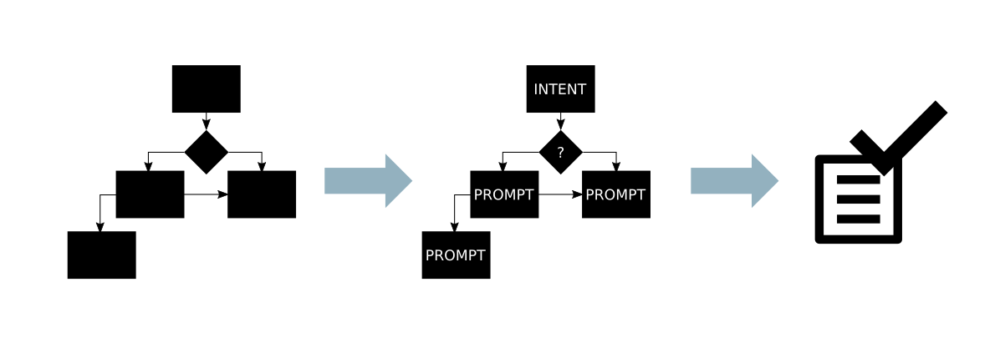

Im Laufe der Zeit habe ich mich auf Sprachdialogkonzepte spezialisiert. Dabei erstelle ich umfangreiche Ablaufdiagramme, die alle technischen und logischen Entscheidungen innerhalb des Sprachdialogs für ein Kommando-Cluster abbilden. Die Gestaltung der Sprachdialoge des persönlichen Assistenten reichen von Plaudereien über direkte und klare Funktionsausführungen bis hin zu kontext-basierten und intelligenten Reaktionen, die auf das individuelle Kundenbedürfnis angepasst sind.
Sofern die Logik eines Sprachdialogs fertig dargestellt ist, beginne ich mit der Integration der konkreten Sprachausgaben für jeden Pfad im Flussdiagramm. Auch aufgrund meines Teilstudiums der Germanistik habe ich ein ausgebildetes Gespür für die Erstellung der deutschen Prompts. Besondere Gesichtspunkte, wie zum Beispiel die Ausprägung des spezifischen Charakters des persönlichen Assistenten oder die Präzision, der im Prompt inbegriffenen Informationen, sind dabei von hoher Wichtigkeit. Auf diese Weise kann die kognitive Belastung in bestimmten Situationen angesichts der simultanen Fahraufgabe so gering wie möglich gehalten werden.